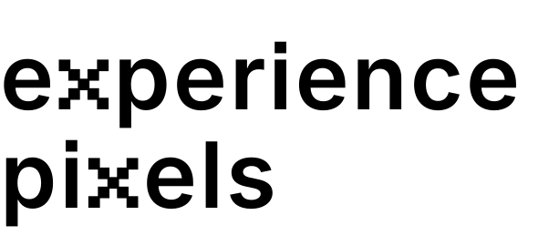
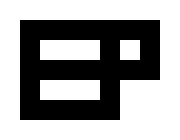
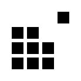
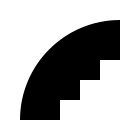

Phase 2. Pure #000 on #FFF. Each mark shown large, then at 64, 32 and 16 px to check favicon survival.
Inter SemiBold outlines, both x glyphs built from nine stem-width squares on a 5x5 pixel grid, square i-dots.

E and P on a 7x5 grid, the E bars run into the P stem. The P counter is the single pixel.

3x3 pixel block, top-right pixel lifted one pitch out of the grid.

Smooth outer quarter circle, three-step staircase inside. Raster meets vector.
